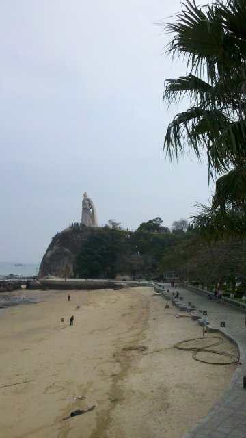
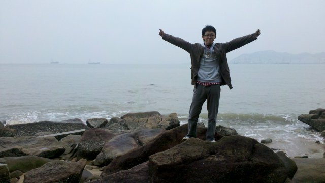

在我看来，有些路是一定要自己一个人走一遍的，比如考研，比如唐山和王府井的夜市。又比如，1月20日以前的鼓浪屿和1月20日以后的鼓浪屿。
第一次对厦门产生温馨情感的时候是高中从所迷恋的作家余光中先生的《听听那冷雨》结尾：“厦门街的雨巷走了二十年与记忆等长，一座无瓦的公寓在巷底等他，一盏灯在楼上的雨窗子里，等他回去，向晚餐后的沉思冥想去整理青苔深深的记忆。前尘隔海。古屋不再。听听那冷雨。”
犹如一波不温不火的长腔，悠悠然、轻轻巧流入我心里。然而此中最有趣的一点便是，厦门街其实在香港。厦门街、金门街，疏落雨声脑中板眼相合；我闭上眼，亮堂、闲适的城市风情影曳神摇，与梦境更无二致。
但真要认真地溯起历史，厦门并没有这么轻松。单说郑成功，就掀起过许多波澜。登鼓浪屿前一天往厦大与南普陀去时，经由渡口，隔海见到国姓爷的雕像日光下神采飞扬。伟捅了捅我：“知道这谁吗？”
我几乎不过脑：“郑成功。”
“恶性！”
我得意地后仰，靠在车后座上。我真的毫不思索吗？我当然犹豫了一阵——毕竟真要立点纪念，金门岛似乎更合理些（当然事实上鼓浪屿的确是与他有莫大关系的）。但这雕像的身形姿态我是打小从历史书里看大的，实在难以有什么理由能够动摇我的想法。
国姓爷的雕像，走近了看，餐风沐雨，更显威武。

他戎马大半生，多在赣、闽出入，潮州、南澳自不必说，连我家乡亦颇受其纷扰——晚上和父亲谈起，他说起我老家（鸥汀）的一段：郑成功当年打鸥汀，由于地形复杂久攻不下，最后由了一家卢姓人家的出卖，才致鸥汀失守。于是人们便多了一个骂人的词“卢厝透仔”（意即卢家的二五仔）。至于郑成功，早就被称为“国姓贼”了。
于是便又想起一事。高中的历史老师颇有来历，阅历知识皆上乘，曾花了大半节课和我们说起汕头人民叛逆的性格和传统。但这一点上我却以为并不完全是这个理。蒋梦麟先生在自传《西潮》里回忆起童年的事情，说他曾听村里老人说起清军入关后的种种。很多村民并没有想象中般反抗得多剧烈。刚开始大家初闻如晴天霹雳，但既然“留发不留头”，毕竟命大过天，也就只好乖乖剃了头发。时间一长，也就习惯了——至少，地方官没怎么变，劳作生息几乎不变，影响便微乎其微了。
——但等到了长毛（太平军）来了之后，村民们反而是充满恐惧的，因为他们带来了野蛮和战乱。所以你看，百姓和史书总是最难琢磨的。
可是你再想深下去，万千雕像里，又有谁是清清白白的呢？鼓浪屿上的郑成功像，并非古人所立，而是1985年因了郑成功诞辰361周年才建成。这一朝似乎特别喜欢郑成功，我想大家都猜得出来这和他的功绩不无关系吧。然则可惜的是毕竟是匆忙的旅游，无暇上去金门，否则替写文章时的余先生偿了心愿，也是好事。
金门岛的事情，有的人知道，有的人不知道，有的人知道的多，有人知道的少。也是这一甲子的事情，免不了要和zz扯上二三。58年的事情我早就知道，但49年的三个团我竟是很近期才知晓。问我爸，他说他也是从网上才得知的（←看看看，能教会爸妈上网、看视频、玩平板的才是孝子有木有！！）。硝烟血泪，随年月沉浮无期，不知是厦门不堪负起，或是什么微妙的、对不起作者已被请去喝茶此处无法打字的原因，厦门更让人向往，醉心不已的，是鼓浪屿。
我的所有SNS网站上都会以很高的频率出现鼓浪屿的小店、照片、动物，即便是我这种过了文艺年龄的（←喂！我知道你们在想什么！文艺之后是成熟而不是**好吗！）也会不禁心潮涌动。
也许是最后一次8元的轮渡了，据说下次来就要交100多了。渡船四平八稳，浪轻而柔，就像高中过了三年的礐石海。岛不太大，走起来并不累，花钱买了手绘地图，找了半天路来到邮局，填好了明信片。二逼的是精心挑选好了之后把收信人抄错张了，所以@海·Nereida~ 你就等着收到一张东锅风格的吧，而@唐冬冬 你会收到一张本来给大海的lomo的灯塔。
至于岛上的游记风景，暂且按下不表。去是肯定还要再去一遍的，而且，要一个人去。
走到下午，回到渡口边，岸边望去，高楼耸立。现代化的城市夹杂着人间胜景，与杭州何其相似。
我翻起地图来看看。伟非常了解我（或者是凑巧）地给我带好了厦门地图，加之上岛时买的鼓浪屿手绘地图，我老早就满足了。对于我这种顶级非路痴来说，有地图就有天下。——所以地图是我在旅途必买的物什，以至于现在总结时，发现地图好像是我在这几年旅行中的唯一不变的留念。
但相比之下，明信片、邮戳（或者好像盖章本？）似乎意义更大呢？或者友邻们有更好的签到、留念的方法，不妨给我的灵感~
细细算来，其实也只玩了一天半。私家车稳稳当当地行在返途上，我又开始冥想起来：自驾游果然比大巴来火车往舒服和有意义得多啊。而我的旅游观又应该是什么呢？有的是时间，慢慢想吧。但有一点，我想，我一定要尽快地买车，去见见远一些的开阔世界。而另一方面，我更要争取在买车之前尽量享受骑行的时光。
回到汕头已入夜。事实上，我并不能为这次旅行打打满分，我想很大程度上是因为之前对鼓浪屿的好感先入为主了吧。——不能写下游记，这是头一遭。你满心希望看到一个慵懒和文艺的地方，却毫无准备地不经发现这座岛是另一种美感。我想最好不过初见吧。于是之前博客里那篇说一直想不好题目的文章，瞬间就有谱了。（改好了）
所以，为了完成游记，我决定还是整理好心情下次再登岛。各位等我下次的游记和明信片吧。
